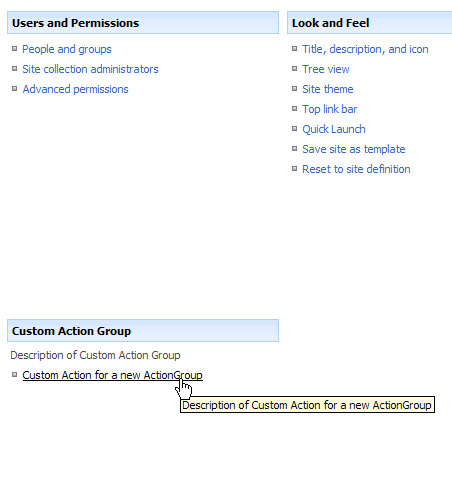

Custom Action Group |
 |  |
| |
Custom Action Group |
Adds a custom action to a site

| Name | Description |
|---|---|
| Location settings | |
| Title | Required Text. Specifies the end user description for this action. |
| Description | Optional Text. Specifies a longer description for the action that is exposed as a tooltip or sub-description for the action. |
| Sequence | Optional Integer. Specifies the ordering priority for actions. |
| Hide Location | Select the location where the action group should be added. |
|
Disclaimer: The views and opinions expressed in this documentation and in SPSF are those of the authors and do not necessarily reflect the opinions and recommendations of Microsoft or any member of Microsoft. All trademarks, service marks, collective marks, copyrights, registered names, and marks used or cited by this documentation are the property of their respective owners.
SharePoint Software Factory, Version 4.1.3.2705, GPLv2, see http://spsf.codeplex.com for more information |